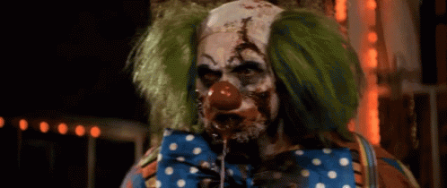
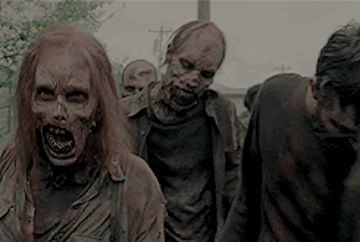
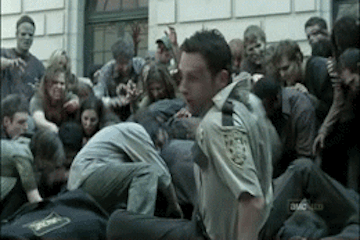
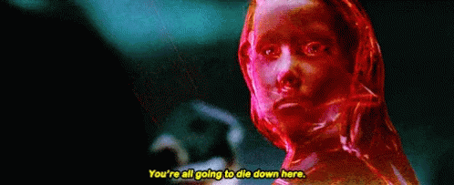
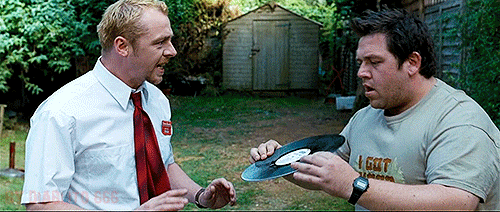

Where does the 1968 George Romero film, "Night of the Living Dead," take place?
Washington Montana New York Pennsylvania

In the movie, "Zombieland," Woody Harrelson's character's name is?
Skates Tallahassee Jack Columbus

What zombie films are based off of a video game series?
Dead Zone War Z Resident Evil Day of the Dead

What do zombies prefer to feast on?
Birds Brains Toes Plastic

In the show, "The Walking Dead," who saved Rick in Atlanta?
Daryl Andrea Glen Carol

The movie, "Resident Evil," took place in an underground researh facility, known as the hive. What is the name of the facility's artificial intelligence?
Red Queen Falkor Zombinator A.I

What is the name of the characters hangout spot in the movie, "Shaun of the Dead?"
Three Sheets Colebrooke Row The Winchester The Hops and Glory
In the movie, "28 Days Later," what is the name of the virus that caused the zombie outbreak?
A-Virus Z-Strain Rage Virus T-Strain